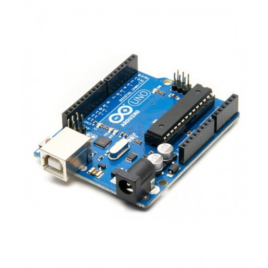
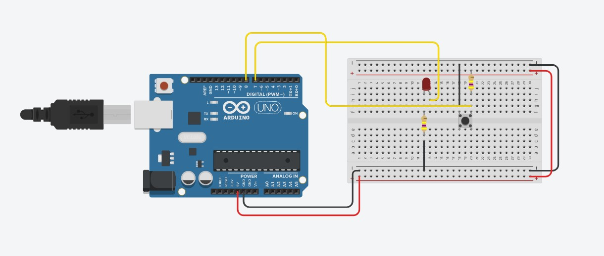
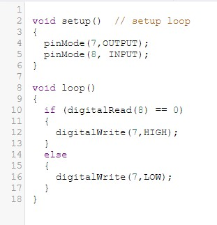

Using Arduino
Arduino is a software that can be installed on your pc to allow you to program a code into your Arduino board. For my case, I used an Arduino UNO which has 12 Digital output pins and 5 Analog output pins. These pins will be used for connections to the different devices. Below is how the Arduino UNO looks like.
But what if I wanted to test my connections to see if it is safe and will not short itself? That is when the free software TinkerCAD comes in. TinkerCAD allows us to digitally make our connections to the Arduino as well as test our code in it without needing to have the physical components.
Above was the first circuit that I made in TinkerCAD. It is a very simple circuit where the LED lights up after you pushed the push button down and turns off when you let go of the push button. The code is very similar to C++ which was easier for me to learn as I already have prior knowledge in coding in C++.
After making my first circuit, I moved on to making something a little more complicated like a traffic light circuit. The circuit above uses a similar code but now with added delays to simulate how a traffic light would work. Try the circuit for yourself!
More of the programming will be shown in my Final Project.